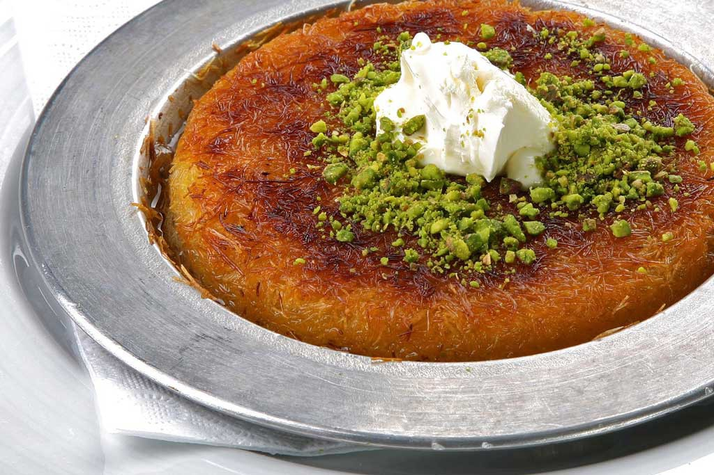

Kunefe

Description
Kunefe also known as kunafa or knafeh is one of the heavenly Turkish desserts made with syrup. It is mostly served at kebab restaurants after the main course like doner kebab. It is made with cheese and shredded Kadayif noodles soaked in sweet syrup.
Ingredients
- Syrup (made with sugar, water and lemon)
- Raw kadayif noodles
- Cheese (mozzarella works fine)
- Butter
- Pistachio for garnish
- Two pans for two portions
- Two extra pans so that we can flip the dessert when cooking.
Prep Steps
- Make the syrup first.
- Place the first layer in a pan.
- Then shred some unsalted cheese like mozzarella over it and cover it with buttered kadayif dough noodles.
- Cook it until the bottom is golden.
- Pour cold syrup over the dessert when it is still hot.
- Garnish with ground pistachio and serve immediately.